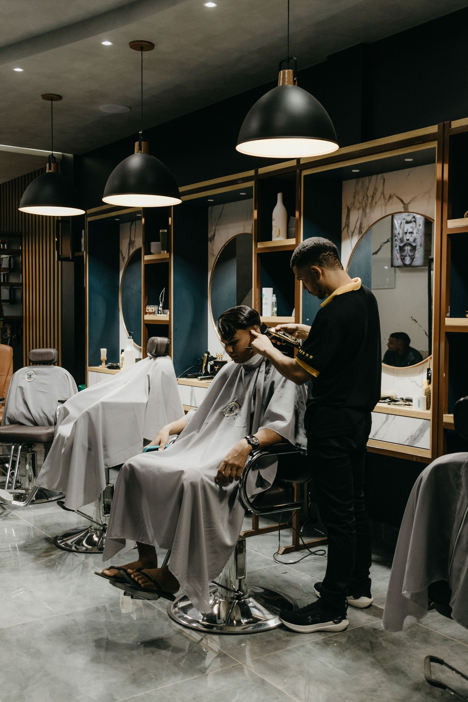

Eat, experience, post. That's the job.
Local businesses comp you a meal or a service. You enjoy it like a real customer, then post honestly about it within 48 hours. No scripts, no fake reviews, your actual experience, your actual voice. SIGNL launches first in Hampton Roads, and the founding roster is forming right now. The first creators in get first pick of the first businesses.
The post is the job.
The Hampton Roads founding market is now the Virginia Beach market, named for the metro's anchor city. Nothing about coverage changed: the market still covers all ten Hampton Roads cities, from Virginia Beach and Norfolk to Chesapeake, Hampton, Newport News and Williamsburg, and every founding creator and business here belongs to it. If you signed up under Hampton Roads, your spot, your order and your founding status are exactly where you left them. The Virginia Beach market page carries the founding story under the market's name.
SIGNL is free for creators. Always. Businesses pay the platform. You never pay to join, to list, or to get booked.
Paid cash campaigns sit on top of comps, and Headliners (15,000+ followers) are first in line for them. Invite other creators with your personal link and earn Momentum points: +3 per sign-up, +10 per approval. Points order the creator list businesses see.
How it works for you
Claim an offer
Restaurants, salons, shops and services post comp offers. Pick the ones you'd genuinely enjoy, your tier sets what you can claim.
Go be a customer
Show up, redeem the comp, and experience the business for real. Bring a guest when the offer includes one.
Post within 48 hours
One post or reel plus one story that shares the post, in your own voice and your own style. The platform tracks the post so the business gets proof and you get credit for the visit.
Be first. It actually matters here.
First pick of everything
When businesses go live, founding creators see and claim offers first. The best tables, the grand openings, the spots everyone's about to talk about, the founding roster eats first.
The whole city comps you
Restaurants are just the start, salons, barbershops, fitness, attractions and local services run comp offers too. If it's local and it wants the neighborhood talking, it's on SIGNL.
Businesses pick you
Your roster profile works while you sleep. Businesses browse the roster and invite the creators they want, no pitching yourself, no DM begging, no chasing brands for collabs.
Founding status sticks
Founding creators keep priority standing as the roster grows. And at the Headliners tier, you're first in line for paid hero campaigns when businesses run them.
Simple deal, enforced fairly
The comp is the pay
A free meal or service is your compensation. Creators are never on a payroll, businesses supply the comp, you supply the post.
48-hour posting standard
48 hours is the standard: your post should be live within 48 hours of the visit, and on-time posts earn Momentum. A post inside a week still counts. Missing the week, or going silent, is what costs roster standing.
FTC disclosure is required
Every post must clearly disclose the comp (e.g. #gifted / "meal provided by…"). No exceptions, it protects you and the business.
No-shows lose their roster spot
Claim it, show up. A no-show without notice, or a visit with no post, removes you from the roster. Businesses plan around your visit.
Honest posts only
Nobody can require a positive review. Post your real take. Businesses that pressure creators get removed, your credibility is the whole product.
Cuts, color, details, days out.
Restaurants are the start, not the whole roster. Salons, barbershops, fitness, attractions and local services run comp offers too, if a local business wants the neighborhood talking, it's on SIGNL.

Where do you land?
- Everyday people with a local following
- Comp only
- Perfect first step into local posting
- Regular local posters, the roster's sweet spot
- Comp plus roster perks
- Priority access to new businesses
- Established local creators
- Comp plus eligibility for paid hero campaigns
- First pick of grand openings and launches
Under 500 followers, or just starting out? Apply anyway. Your tier is set by your follower count, and it moves up as you grow. What matters most is not the number, it's that your audience is actually local and actually engages. Pick your band honestly when you sign up.
What happens next
We review in order
Founding applications are read in the order they arrive, by a human, not a bot. First in, first reviewed. That's the whole queue system.
You get your tier
Your follower count sets your tier, Neighbors, Locals or Headliners, and your founding status is yours from day one. It never expires.
You pick first
When businesses go live, the founding roster sees every comp offer before anyone else. The best tables and experiences go to the people who were here first.
The scene is already here. This is who it looks like.
The Hampton Roads scene is real: thousands of local creators post this city's food, lifestyle and businesses every week. The profiles below are samples, labeled as samples, shown the way businesses will see real founding creators: tier, neighborhood, and a local audience figure with its source printed next to it. Real creators appear on this page only with their permission. The founding roster itself is forming now from applications across the 757.
Jordan Ellis
@jordaneats757 · Locals tier · Virginia Beach food and everyday local life. Local audience 58%, self-reported.
Priya Nair
@priyaplates · Sample persona · Hampton Roads restaurants, bakeries and family tables.
Sofia Grant
@sofiagetslocal · Sample persona · Norfolk and Virginia Beach experiences, salons and nights out.
Own a business here? Founding enrollment is open.
Founding businesses get first pick of the founding roster and founding pricing held for their first term, and founding status never expires.
Questions, answered straight
Does it cost anything to join SIGNL as a creator?
No. Joining and staying on the roster is free, and creators are never charged fees. Your compensation on standard visits is the comp itself, the meal, service or experience the business provides.
How do creators get paid on SIGNL?
On standard visits, the comp is the pay: a free meal, service or experience in exchange for an honest post. Headliners (15,000+ followers) are also eligible for paid hero campaigns when businesses run them.
Do I have to post something positive?
Never. Honest posts only, that is the entire product. Businesses cannot require a positive post or review, and a business that pressures a creator is removed from the platform. Post your real experience, in your own voice.
What do I have to post, and how fast?
1 post or reel plus 1 story that shares the post about the visit, posted to a 48-hour standard, with a week as the outside limit, with a clear disclosure that it was comped (for example “comped” or #gifted), as FTC guidelines require. If a claimed visit gets no post inside the week, the business gets a replacement visit and the creator's roster standing takes the hit; repeat no-shows lose their spot.
I have fewer than 500 followers. Can I still apply?
Yes, any follower count can apply. Your tier (Neighbors 500–2,000, Locals 2,000–15,000, Headliners 15,000+) is set by your follower count and rises as you grow. A small, genuinely local audience beats a big, scattered one.
I'm not in Hampton Roads. Can I still join SIGNL?
Yes. SIGNL launches city by city, and Hampton Roads, Virginia is where SIGNL began, one of 37 founding markets in 8 countries. Apply with your home city and you are first on its list: when your city opens, its early applicants become its founding roster. Cities are picked by signup counts.
Are there brand deals for creators in Virginia Beach and Hampton Roads?
Yes, and this is where SIGNL started. The Virginia Beach founding roster covers all of Hampton Roads: Virginia Beach, Norfolk, Chesapeake, Portsmouth, Suffolk, Hampton, Newport News and Williamsburg. Local restaurants, salons, gyms and attractions post comp offers here, and founding creators get first pick of every one. If you post about life in the 757, this roster was built for you.
One market, ten cities
The Virginia Beach founding roster covers the whole metro, not just the anchor city. Creators and businesses in any of these ten Hampton Roads cities belong to the Virginia Beach market, and a creator's local audience here is measured against this same list.
- Virginia Beach
- Norfolk
- Chesapeake
- Portsmouth
- Suffolk
- Newport News
- Hampton
- Williamsburg
- Poquoson
- Yorktown
This page is the Hampton Roads launch story: why SIGNL starts in the 757 and what founding means here. The Virginia Beach market page carries the directory view: neighborhoods covered, founding terms, and roster details for this market.
Claim your founding spot
Sign-ups are open now, ahead of launch, right in the SIGNL app. Founding creators are reviewed in sign-up order, and when businesses go live, the founding roster gets first pick of every offer on the platform. Hampton Roads opens in the first wave of founding markets, inside the next 30 to 90 days.
Sign-ups live in the SIGNL app now
Create your account and build your full founding profile in a few minutes: home city, your handles, your photo, your tier band and what you post about. Your founding priority number is set by when you finish signing up, and Hampton Roads opens first.
Create my founding creator account
Already signed up? Sign in at app.joinsignl.com
Tell us where to launch next
SIGNL is launching city by city, Hampton Roads first. If you're a creator somewhere else, drop your city below. The loudest cities move up the list, and when we launch near you, you'll be the first to know.
City counted
Your city is on the board. Cities with the most requests launch first, tell your creator friends to pile on.